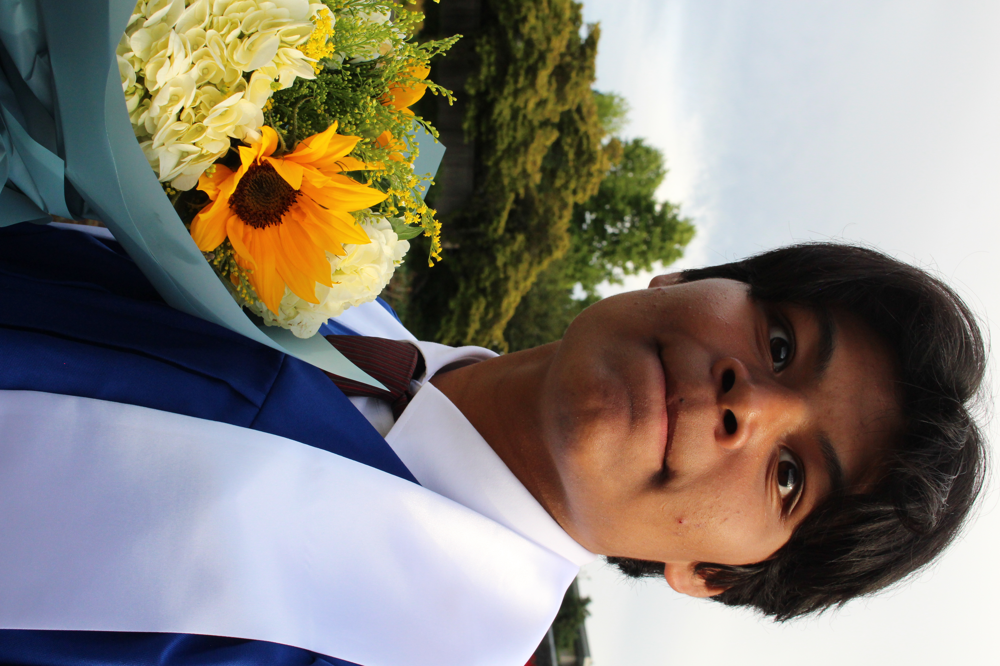
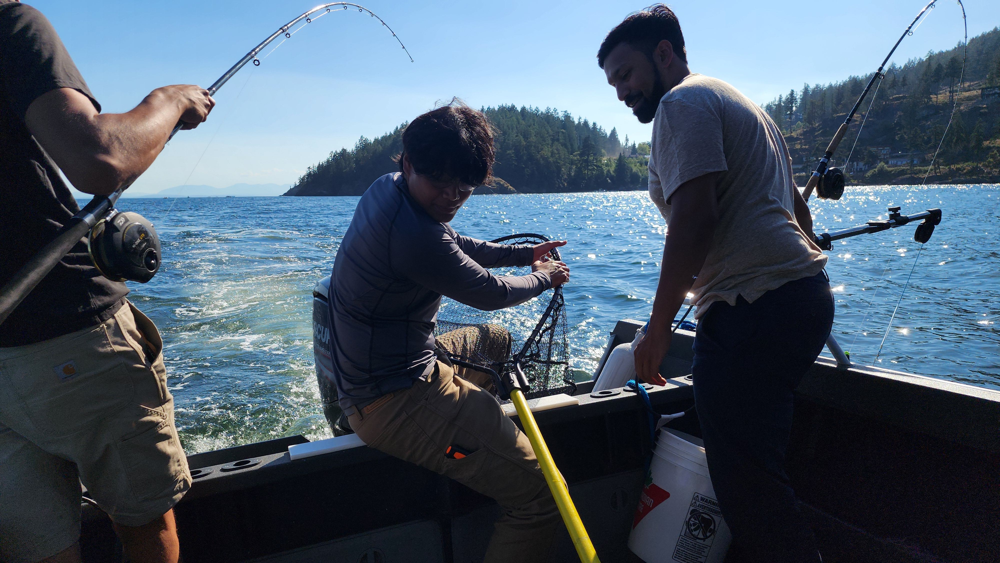
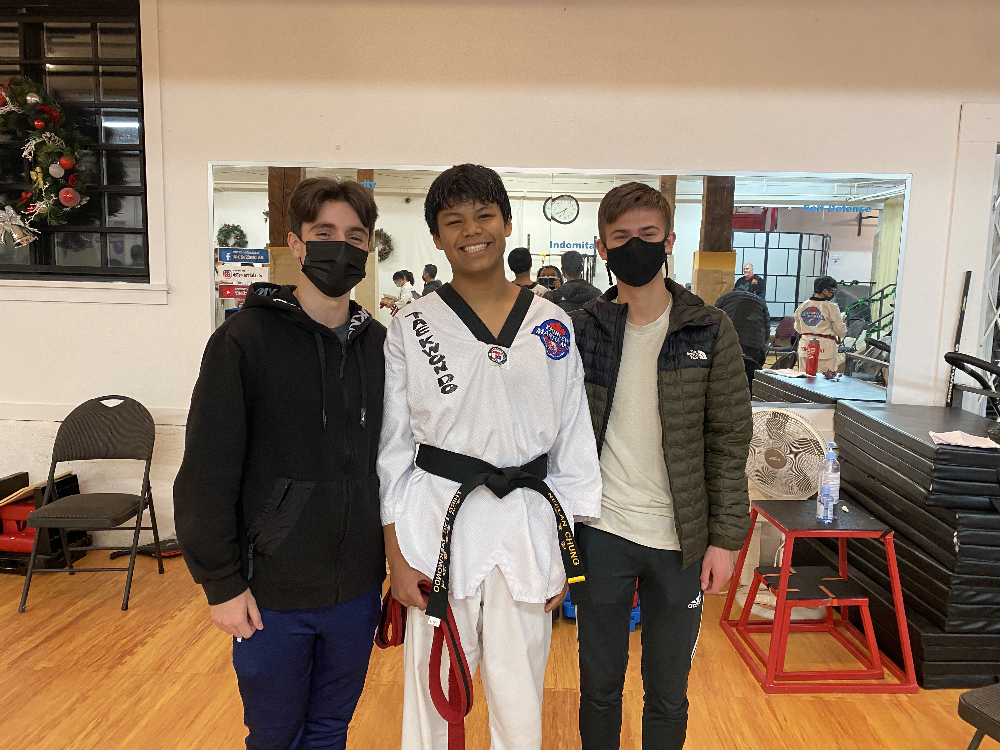

About me

I seek adventure through innovation. Whether It's technical or personal, I throw myself into new situations and challenges as a way to see myself and the world around me from different perspectives. I'm a community-oriented person, and I believe that designing a truly great project only happens with the development of authentic relationships. Shared passion towards solving a common goal creates the perfect environment for building those relationships.
Interests

I'm a wilderness enthusiast. I've been fishing and hiking since I could walk. In a way, the outdoor world parallels the engineering one; In both, you get to experience an environment where you are participating in something larger than yourself.

I love martial arts and athletics. I have a 2nd-degree black belt in Taekwondo, and the values of perseverance, self-control, and humility that I learned throughout my martial arts journey are things that I try to apply in my everyday life.